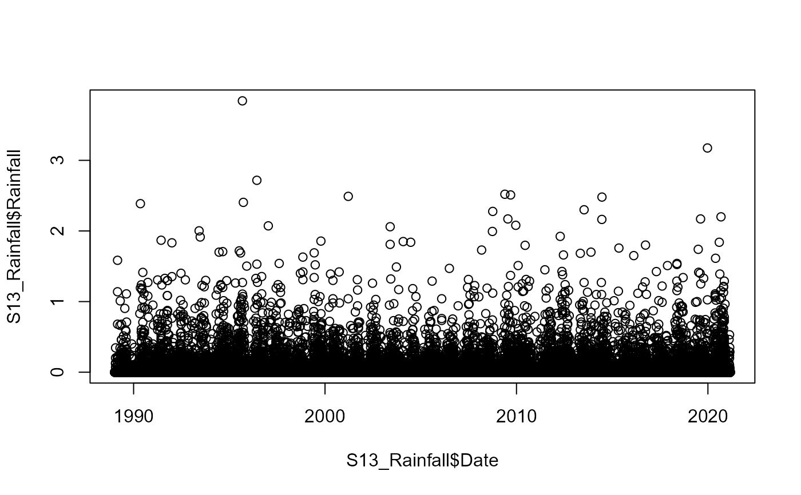
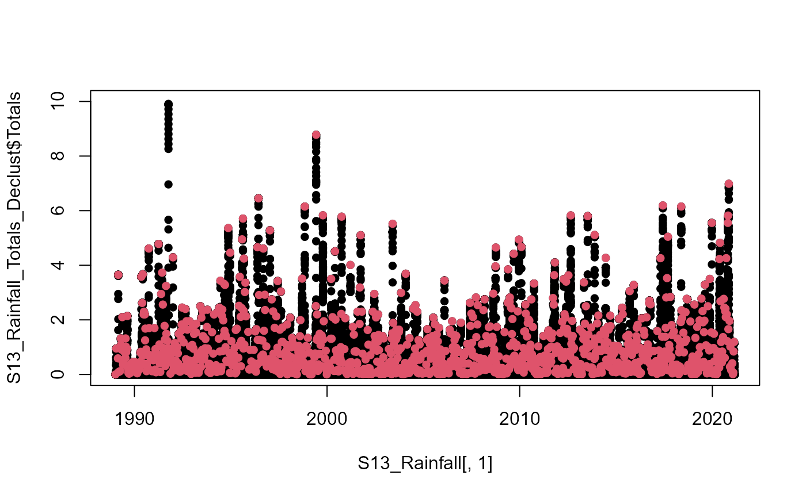

Declusters a Summed time series using a moving (Storm) Window approach
Decluster_S_SW.RdFinds the sum of a time series within a moving window then declusters the summed series using another moving window.
Arguments
- Data
Data frame containing two columns. In column:
1A"Date"object of equally spaced discrete time steps.2Numeric vector containing corresponding time series values.
- Window_Width_Sum
Numeric vector of length one specifying the window width over which to sum the data.
- Window_Width
Numeric vector of length one specifying the width, in days, of the window used to ensure events are independent.
Value
List comprising vectors containing the original time series Detrend, the summed series Totals, independent (declustered) events Declustered, the elements of the original series containing the start (Event_Start), center EventID, and end (Event_End) of the declustered events. Note for Window_Width_Sum_Type="End", Event_End and EventID are identical.
Examples
#Declustering 24 hour rainfall totals at site S13 using a 7-day window for declustering the events.
plot(S13_Rainfall$Date,S13_Rainfall$Rainfall)

S13_Rainfall_Totals_Declust<-Decluster_S_SW(Data=S13_Rainfall, Window_Width_Sum=24,
Window_Width=7*24)
plot(S13_Rainfall[,1],
S13_Rainfall_Totals_Declust$Totals,
pch=16,ylim=c(0,10))
points(S13_Rainfall[S13_Rainfall_Totals_Declust$EventID,1],
S13_Rainfall_Totals_Declust$Totals[S13_Rainfall_Totals_Declust$EventID],
col=2,pch=16)
